THE FAMILY
Generational Baidya StewardshipTransmitted across generations of practicing Baidyas, our clinic embodies diagnostic intuition, pulse reading mastery, and compounding standards developed through decades of capital practice.
A Baidya family Ayurvedic clinic and botanical pharmacy — practising classical medicine, personal consultation, and in-house compounding at this address in Bagbazar, Kathmandu.
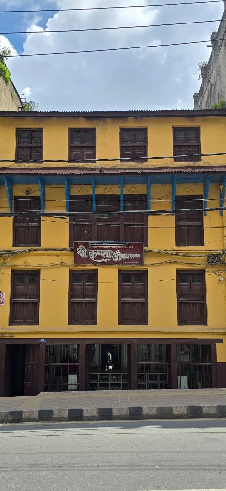
In-person constitutional pulse diagnosis (Nadi Pariksha) and individualized Ayurvedic therapies.
Direct counter fulfillment of classical formulations, churnas, vatis, rasayanas, and single herbs.
In-house botanical milling, purification, and licensed manufacturing according to classical texts.
Custom botanical formulations and wholesale preparation for wellness partners across Europe.
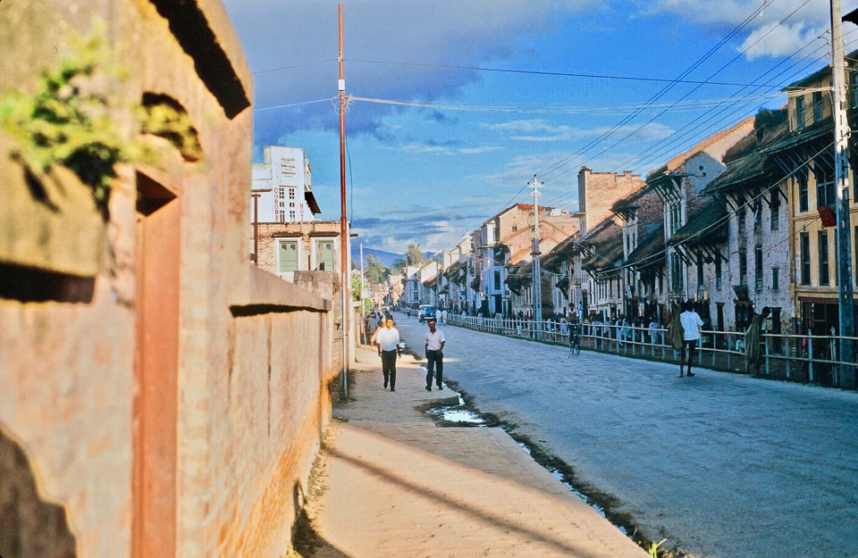
The Shree Krishna Aushadhalaya shopfront appears at the right-hand corner. From the quiet dirt road of 1968 to today's vibrant commercial street, our family institution has maintained an unbroken physical sanctuary of traditional Ayurvedic medicine at this exact location. Historical royal associations and physician correspondence remain preserved in our family archives.
Transmitted across generations of practicing Baidyas, our clinic embodies diagnostic intuition, pulse reading mastery, and compounding standards developed through decades of capital practice.
Our dispensary stocks authentic churnas, classical fermented asavas and arishtas, purified minerals, and potent botanical vatis prepared according to authoritative Ayurvedic pharmacopeias.
We treat the whole physiological constitution (Prakriti), identifying root imbalances (Vikriti) and restoring equilibrium through custom medicine regimens, seasonal dietetics, and lifestyle guidance.
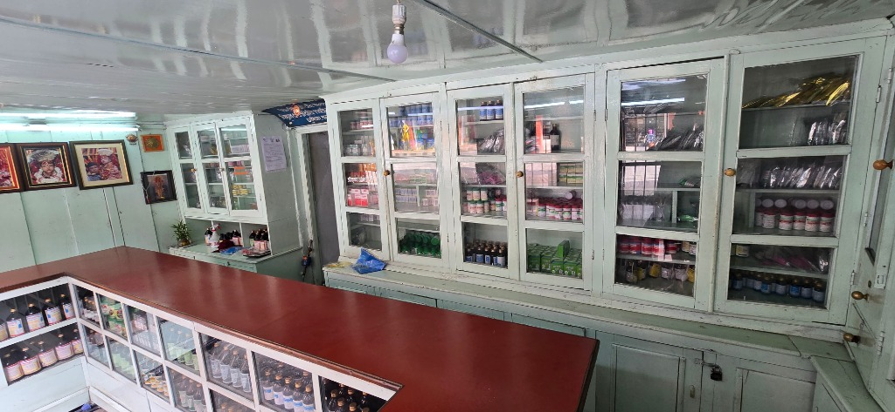
An in-house compendium of 37 proprietary and classical formulations prepared from ethically sourced Himalayan minerals and wild-harvested botanicals.
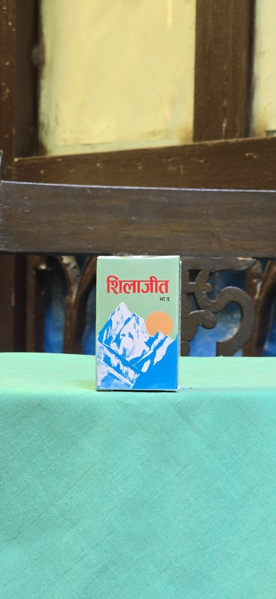
Purified high-altitude Himalayan mineral resin harvested from cliff faces. Rejuvenative rasayana rich in fulvic acid, known for cellular stamina, deep mineral balance, and restorative vitality.
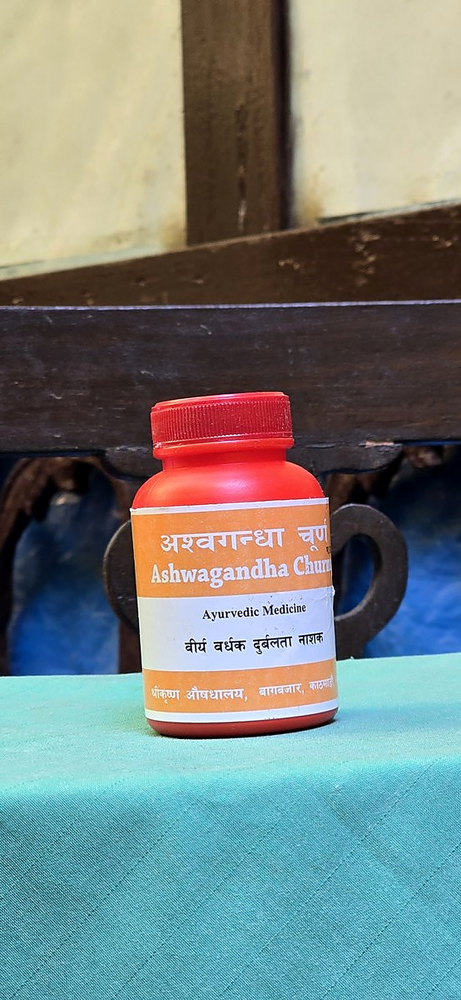
Pure Withania somnifera root milled in-house. A premier adaptogenic botanical supporting nervous system calming, sound sleep, physical vigor, and musculoskeletal strength.
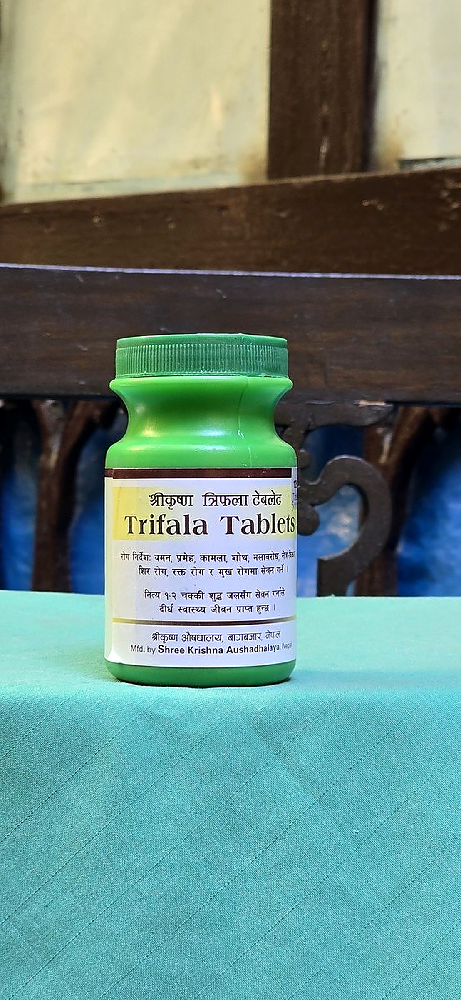
The revered classical triad of Haritaki, Bibhitaki, and Amalaki compressed into convenient traditional vatis. Gently regulates digestive Agni, clears metabolic residue, and tones tissue vitality.
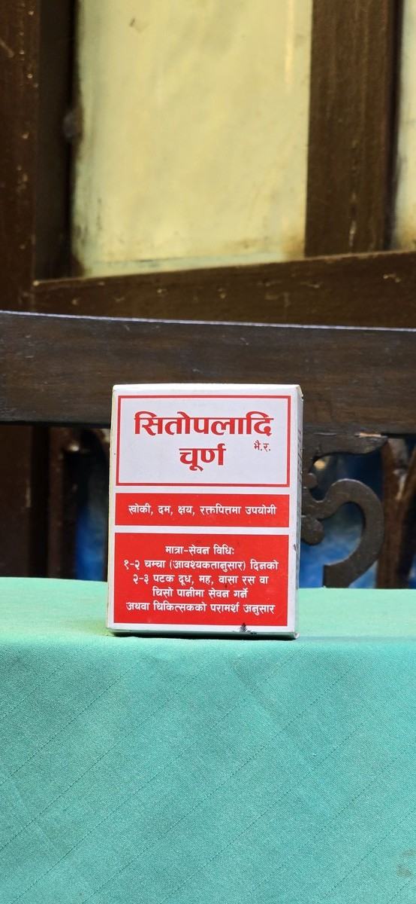
Time-honored blend of Vanshlochan, Pippali, Ela, Twak, and rock sugar crystals. Traditionally prescribed for throat soothing, upper respiratory ease, mucosal balance, and post-seasonal recovery.
In-person pulse diagnosis, constitutional care, and continuous dispensary counseling in Bagbazar under registered Ayurvedic practitioner stewardship.
Morning clinical diagnosis focuses on constitutional balance (Prakriti), pulse characteristics (Nadi Pariksha), and metabolic vitality. While scheduled doctor visits run 9:00 to 11:00 AM, our senior physician and registered practitioners remain on hand at the dispensary counter to answer questions, explain medicine courses, and assist patients with unhurried care.
Drawing upon generations of botanical expertise in the Himalayas, Shree Krishna Aushadhalaya compounds and supplies authentic Ayurvedic formulations for wellness partners across Europe and beyond.
Authentic preparation according to canonical Ayurvedic texts.
Formulations tailored to partner-specific specifications and standards.
In-house processing adhering to traditional purification methodologies.
Reliable botanical supply to partner companies across Europe.
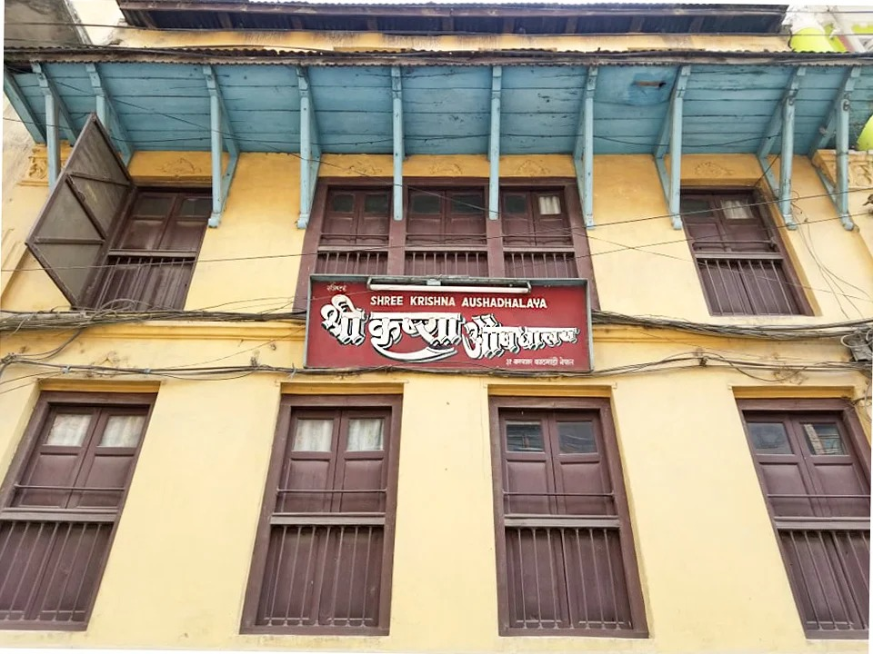
A verified curatorial record documenting our landmark premises, dispensary compounding, architectural history, and neighbourhood context in Bagbazar.
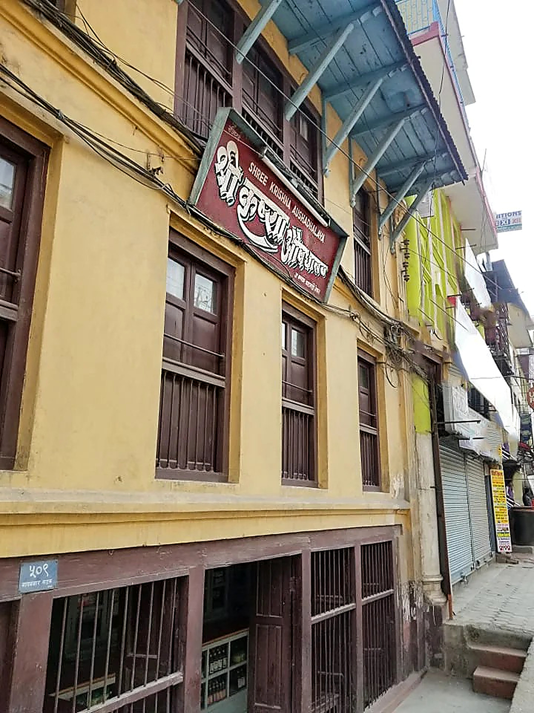
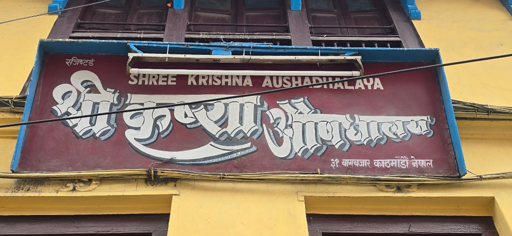
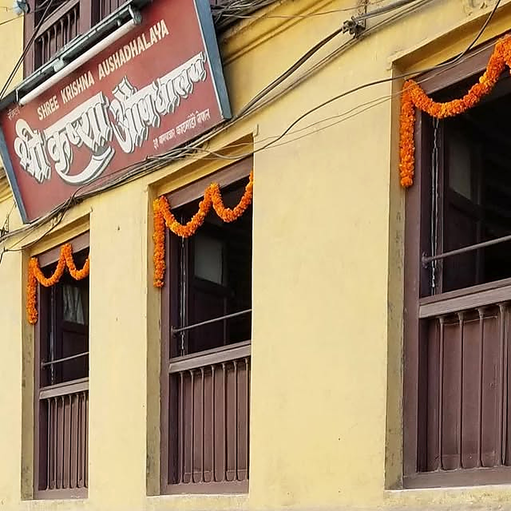
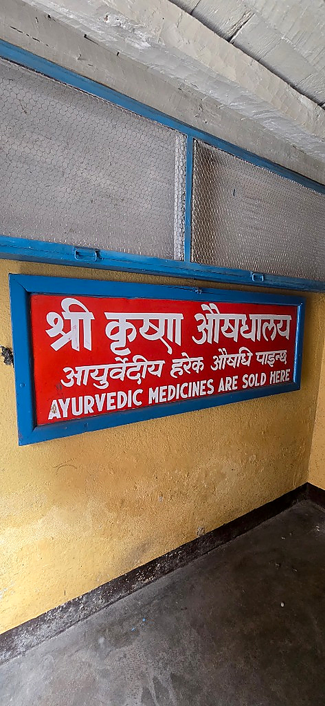
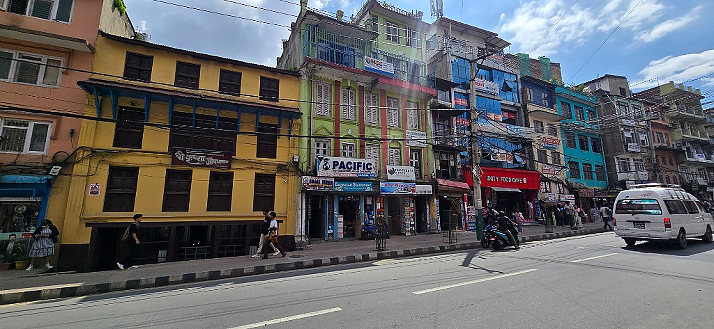
Located on Bagbazar road in central Kathmandu, welcoming patients and visitors daily.